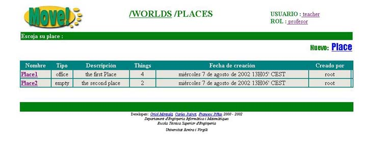

2.3 Zona Places
Despues de entrar en alguno de los Worlds disponibles en MOVE! nos encontraremos en la zona PLACES del World seleccionado con anterioridad.

Aqui podemos ver una tabla con todos los Places que hay dentro del World donde nos encontramos. La informaci�n que podemos ver de ellos es la siguiente:
- Nombre: nombre del Place
- Tipo: tipo de Place
- Descripci�n: descripci�n del Place
- Things: n� de things que contiene este Place
- Fecha de creaci�n: fecha en la cual ha sido creado
- Creado por: login del usuario que lo ha creado
Podemos entrar en cualquier de ellos solamente clicando sobre su nombre, o bien eliminarlo clicando sobre 
(NOTA: Solo podremos eliminar un place si ha sido creado por nosotros o bien si tenemos el rol de administrador)
Por otra parte si clicamos sobre tendremos la posibilidad de crear nuevos Places.